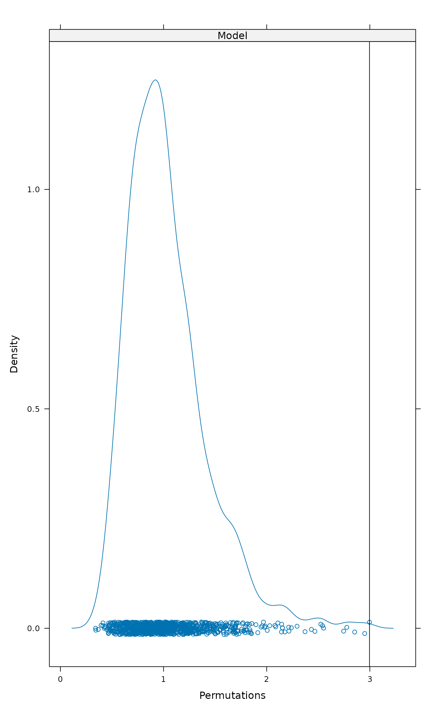

Extract, Analyse and Display Permutation Results
permustats.RdThe permustats function extracts permutation results of
vegan functions. Its support functions can find quantiles and
standardized effect sizes, plot densities and Q-Q plots.
permustats(x, ...) # S3 method for permustats summary(object, interval = 0.95, alternative, ...) # S3 method for permustats densityplot(x, data, xlab = "Permutations", ...) # S3 method for permustats density(x, observed = TRUE, ...) # S3 method for permustats qqnorm(y, observed = TRUE, ...) # S3 method for permustats qqmath(x, data, observed = TRUE, sd.scale = FALSE, ylab = "Permutations", ...) # S3 method for permustats boxplot(x, scale = FALSE, names, ...) # S3 method for permustats pairs(x, ...)
Arguments
| object, x, y | The object to be handled. |
|---|---|
| interval | numeric; the coverage interval reported. |
| alternative | A character string specifying the limits used for
the |
| xlab, ylab | Arguments of
|
| observed | Add observed statistic among permutations. |
| sd.scale | Scale permutations to unit standard deviation and observed statistic to standardized effect size. |
| data | Ignored. |
| scale | Use standardized effect size (SES). |
| names | Names of boxes (default: names of statistics). |
| ... | Other arguments passed to the function. In
|
Details
The permustats function extracts permutation results and
observed statistics from several vegan functions that perform
permutations or simulations.
The summary method of permustats estimates the
standardized effect sizes (SES) as the difference of observed
statistic and mean of permutations divided by the standard deviation
of permutations (also known as \(z\)-values). It also prints the
the mean, median, and limits which contain interval percent
of permuted values. With the default (interval = 0.95), for
two-sided test these are (2.5%, 97.5%) and for one-sided tests
either 5% or 95% quantile and the \(p\)-value depending on the
test direction. The mean, quantiles and \(z\) values are evaluated
from permuted values without observed statistic, but the
\(p\)-value is evaluated with the observed statistic. The
intervals and the \(p\)-value are evaluated with the same test
direction as in the original test, but this can be changed with
argument alternative. Several permustats objects can
be combined with c function. The c function checks
that statistics are equal, but performs no other sanity tests.
The density and densityplot methods display the
kernel density estimates of permuted values. When observed value of
the statistic is included in the permuted values, the
densityplot method marks the observed statistic as a vertical
line. However the density method uses its standard plot
method and cannot mark the observed value.
The qqnorm and qqmath display Q-Q plots of
permutations, optionally together with the observed value (default)
which is shown as horizontal line in plots. qqnorm plots
permutation values against standard Normal variate. qqmath
defaults to the standard Normal as well, but can accept other
alternatives (see standard qqmath). The
qqmath function can also plot observed statistic as
standardized effect size (SES) with standandized permutations
(argument sd.scale). The permutations are standardized
without the observed statistic, similarly as in summary.
Functions density and qqnorm are based
on standard R methods and accept their arguments. They only handle
one statistic, and cannot be used when several test statistic were
evaluated. The densityplot and
qqmath are lattice graphics, and can be
used either for one or for several statistics. All these functions
pass arguments to their underlying functions; see their
documentation. Functions qqmath and
densityplot default to use same axis scaling
in all subplots of the lattice. You can use argument scales to
set independent scaling for subplots when this is appropriate (see
xyplot for an exhaustive list of arguments).
Function boxplot draws the box-and-whiskers plots of effect
size, or the difference of permutations and observed statistic. If
scale = TRUE, permutations are standardized to unit standard
deviation, and the plot will show the standardized effect sizes.
Function pairs plots permutation values of statistics against
each other. The function passes extra arguments to
pairs.
The permustats can extract permutation statistics from the
results of adonis,
anosim, anova.cca, mantel,
mantel.partial, mrpp,
oecosimu, ordiareatest,
permutest.cca, protest, and
permutest.betadisper.
Value
The permustats function returns an object of class
"permustats". This is a list of items "statistic" for
observed statistics, permutations which contains permuted
values, and alternative which contains text defining the
character of the test ("two.sided", "less" or
"greater"). The qqnorm and
density methods return their standard result objects.
See also
Examples
data(dune, dune.env) mod <- adonis(dune ~ Management + A1, data = dune.env) ## use permustats perm <- permustats(mod) summary(perm)#> #> statistic SES mean lower median upper Pr(perm) #> Management 3.0730 4.6870 1.0387 0.9565 1.8217 0.004 ** #> A1 2.7676 2.7175 1.0022 0.8484 2.2436 0.028 * #> --- #> Signif. codes: 0 ‘***’ 0.001 ‘**’ 0.01 ‘*’ 0.05 ‘.’ 0.1 ‘ ’ 1 #> #> (Interval (Upper - Lower) = 0.95)densityplot(perm)qqmath(perm)## example of multiple types of statistic mod <- with(dune.env, betadisper(vegdist(dune), Management)) pmod <- permutest(mod, nperm = 99, pairwise = TRUE) perm <- permustats(pmod) summary(perm, interval = 0.90)#> #> statistic SES mean lower median upper Pr(perm) #> Overall (F) 1.9506 0.7173 1.1427 0.8211 2.4909 0.154 #> BF-HF (t) -0.5634 -0.4124 -0.0443 -2.0202 -0.0293 1.8851 0.591 #> BF-NM (t) -2.2387 -1.8672 -0.0045 -1.8423 0.0074 2.0628 0.067 . #> BF-SF (t) -1.1675 -0.9341 -0.0086 -1.9337 -0.0450 1.9486 0.283 #> HF-NM (t) -2.1017 -1.9328 0.0277 -1.6716 0.0346 1.7582 0.067 . #> HF-SF (t) -0.8789 -0.7872 0.0321 -1.8598 0.0284 1.8394 0.379 #> NM-SF (t) 0.9485 0.8265 0.0121 -1.9118 0.0690 1.7827 0.379 #> --- #> Signif. codes: 0 ‘***’ 0.001 ‘**’ 0.01 ‘*’ 0.05 ‘.’ 0.1 ‘ ’ 1 #> #> (Interval (Upper - Lower) = 0.9)